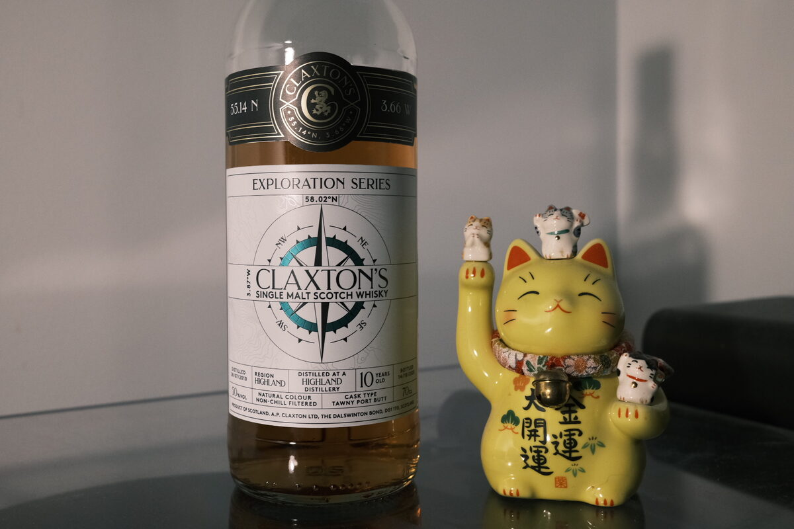

Secret Highland 2010 Claxton's Exploration 10 years 50% (tawny port butt)
Another Claxton’s Exploration bottling. This time a secret highland. Coordinates are 58.02N, 3.87W.
Colour Rose gold.
Nose Waxy malt – candlewax. Brown sugar and caramelised apples. Apple pie! Cinnamon and a hint of cloves. Vanilla. Dried fruits and red wine – port-like. Fresh apple juice. Very enticing.
Palate Sharp, bright, a little acidity. Sweet and thick too, almost like a nice balsamic vinegar. Huge waxy malt! Stewed and dried fruits, fruit mince tart. Very spicy. Some oak and woodiness. Mulled wine and cinnamon sticks.
Finish Vanilla bean ice cream and cinnamon. Apples. So, apple pie and ice cream. Hot molasses. Malty. Nutella. Moderately long, but the heat and spices do linger. Hot apple juice (yes…).
Comments Cracking stuff. Very harmonious: a sense of apple pie served alongside vanilla ice cream persists throughout the whole experience. You’ll be pleased to know that the malt is indeed there and there’s a few other notes to keep us on our toes. Cheerful – I suspect if the distillery was properly named and bumped to cask strength I’d be paying double the price. 85/100.

Posted by Dominic on 01 May 2021